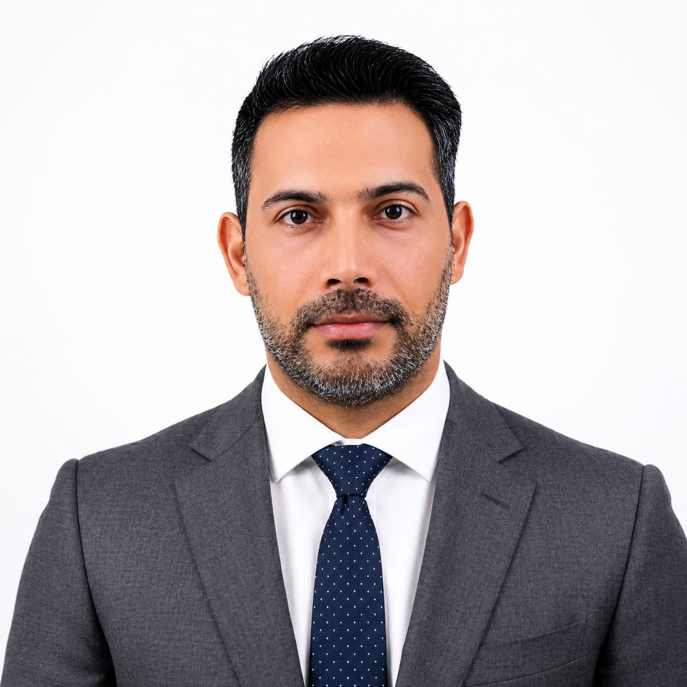

Senior hydraulic and water resources engineer with 16 years of international experience across Iran, Oman, and remote international engagements — currently serving as Team Leader on one of Oman's largest ongoing flood protection programmes, covering the North and South Al Batinah Governorates for the Ministry of Agriculture, Fisheries & Water Resources.
Specialist in flood modelling and protection, climate adaptation, dam and spillway design, stormwater masterplanning, irrigation, water supply, and transient analysis — with a project record spanning national-scale flood risk programmes, US-regulated dam safety assessment, multi-province flood hazard mapping, and urban water infrastructure across Iran. Distinguished by a combination rarely found at this seniority: deep hydraulic engineering paired with modern computational practice — automation of engineering workflows, spatial data pipelines, and AI-augmented project delivery.
| Category | Proficient | Intermediate | Familiar |
|---|---|---|---|
| Hydraulic & Hydrological | HEC-RAS 1D/2D, HEC-HMS, SewerGEMS, InfoDrainage, HY-8, HEC-SSP | InfoWorks ICM, WaterGEMS, Hammer, Flow 3D, InfoWater, OpenFOAM / ParaView | Delft3D |
| GIS & Spatial | QGIS (advanced), ArcGIS / ArcGIS Pro, Global Mapper, Google Earth Engine | PostGIS, QGIS Python plugins | — |
| Survey & Mapping | Total Station (Leica), GNSS / GPS | UAV / Drone Mapping | — |
| Programming & Automation | Python (geospatial pipelines, HEC-RAS automation, HDF5) | VBA, R, PostgreSQL / PostGIS, Jython | C#, MATLAB, SPSS |
| CAD & Design | AutoCAD, Civil 3D, Storm & Sanitary Analysis (SSA), Subassembly Composer | Infraworks | — |
| Data & Dev Tools | MS Office 365 | Docker, GitHub, Power BI, AI-augmented engineering workflows | MS Project, SAP2000, ETABS |